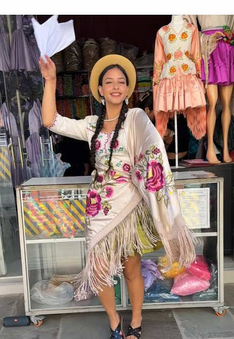
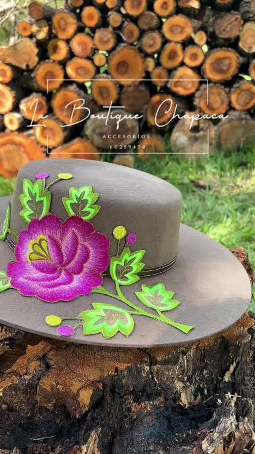
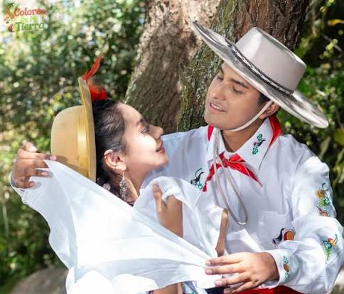
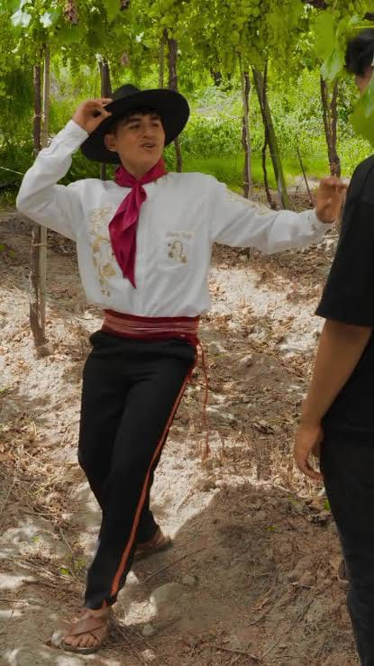
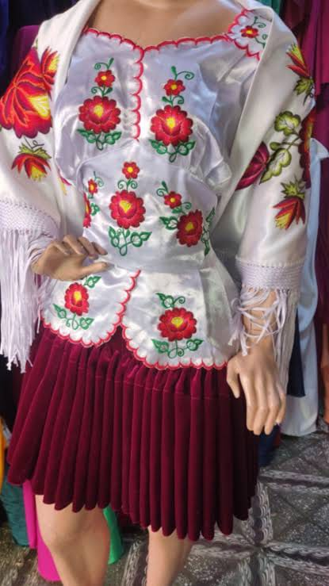
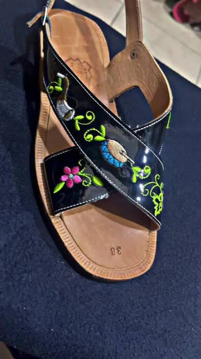

🌺 Vestimentas Tradicionales de Tarija 🌺
Tradición, cultura e identidad de los valles y el Chaco tarijeño.
Tarija tiene una gran diversidad cultural que se expresa en las tradiciones de sus valles, zonas rurales y comunidades del Chaco. La vestimenta cambia según la región, el clima y la ocasión. Entre las prendas y elementos tradicionales se encuentran los sombreros, pañuelos, camisas, pantalones, polleras y abarcas. Sus materiales y formas de uso están relacionados con las actividades cotidianas y las costumbres de cada comunidad.

1. Tipoy
Es un vestido amplio, ligero y generalmente colorido, utilizado tradicionalmente por mujeres de algunas zonas cálidas del oriente y del Chaco. Su diseño permite comodidad en climas calurosos y representa las tradiciones de las comunidades donde se utiliza.

2. Sombrero
Se utiliza para protegerse del sol durante las actividades al aire libre. En las comunidades rurales de Tarija existen distintos estilos y materiales, de acuerdo con el clima y las costumbres de cada zona.

3. Pañuelo
Es un accesorio que puede llevarse al cuello o como complemento de la vestimenta. Sus colores y formas de uso varían según la tradición y la ocasión. También puede formar parte de la indumentaria festiva.

4. Camisa y pantalón
En la vestimenta masculina se utilizan camisas y pantalones cómodos, adecuados para las actividades del campo y la vida cotidiana. En algunas ocasiones se complementan con sombreros, pañuelos o fajas.

5. Pollera y blusa
En algunas comunidades y celebraciones se utilizan polleras combinadas con blusas. Los colores, adornos y diseños dependen de las costumbres locales y de la ocasión en que se viste este conjunto.

6. Abarcas
Son un tipo de calzado sencillo y resistente que se utiliza en algunas zonas rurales. Resultan prácticas para caminar y realizar actividades cotidianas, y forman parte de la vestimenta de distintas comunidades.
Guarda las seis fotografías en la misma carpeta que este archivo HTML.